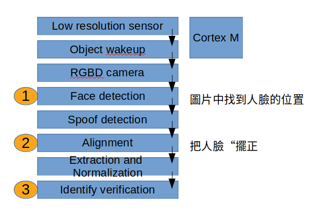

Face-recognition
https://github.com/erhwenkuo/face-recognition
人臉檢測是對人臉進行識別和處理的第一步，主要用於檢測並定位圖片中的人臉，
返回高精度的人臉框座標及人臉特徵點座標。人臉識別會進一步提取每個人臉中所藴涵的身份特徵，
並將其與已知的人臉進行對比，從而識別每個人臉的身份。
目前人臉檢測/識別的應用場景逐漸從室內演變到室外，從單一限定場景發展到廣場、車站、地鐵口等場景，
人臉檢測/識別面臨的要求也越來越高，比如：人臉尺度多變、數量宂大、姿勢多樣包括俯拍人臉、
戴帽子口罩等的遮擋、表情誇張、化粧偽裝、光照條件惡劣、分辨率低甚至連肉眼都較難區分等。
隨着深度學習的發展，基於深度學習技術的人臉檢測/識別方法取得了巨大的成功
Flow
FaceID(判斷是誰) flow

細節
或許你會有個疑問:是否可以用SSD來抓圖片中人臉的obejct
自从anchor-based method出现之后，物体检测基本上就离不开这个神奇的anchor了。只因有了它的协助
(anchor就是以pixel為anchor會有多幾個bouding box)
人类才在检测任务上第一次看到了real time的曙光
人脸相对于其他物体来说有一个普遍的特点，就是在图像中所占像素少。
比如，coco数据集中，有一个分类是“人”，但是人脸在人体中只占很少一部分，在全图像上所占比例就更少了
所以SSD不好做face object deteciton
</td>
人臉跟蹤(視頻中跟蹤人臉位置變化)；
人臉驗證(輸入兩張人臉，判斷是否屬於同一人)；
人臉識別(輸入一張人臉，判斷其屬於人臉數據庫記錄中哪一個人)；
人臉聚類(輸入一批人臉，將屬於同一人的自動歸爲一類)；
</td>
Summary
MTCNN方法可以概括为：图像金字塔+3阶段级联CNN
它是由三個不能一起訓練的獨立神經網絡組成的 (所以要分別訓練)
PNet: 獲得了人臉區域的候選窗口和邊界框的迴歸矢量 (花的時間最久)
RNet: 利用邊界框的迴歸值微調候選窗體，再利用NMS去除重疊窗體
ONet: 去除重疊候選窗口的同時，同時顯示"五個人臉關鍵點定位"
</td>
使用人脸内嵌的欧式距离判断两个人脸是否为同一人，
同一个人的人脸之间的类间距很小，不同的人的人脸之间类间距很大
Flow:
(0) 拿到人臉圖(且也效正過)
(1) 深度网络处理(抽取出features)
facenet源码中可供采用的inception_resnet_v1，inception_resnet_v2和squeezenet，squeezenet网络模型较小，
作者采用的inception_resnet_v1，官方的预训练模型也是居于inception_resnet_v1的。
(2) 进行L2正则化，
(3) 然后内嵌得出128维的特征值(將人臉轉換到另外一個維度)
所谓的内嵌，可以理解成一种映射关系，就是把原有的特征空间转换为新的特征空间
(4) Loss(這個就可以和其他人臉就比對,如果loss小於1.06,就是同一個人)
正负样本训练，训练的目标是与正样本之间的类间距最小，与负样本之间的类间距最大
由於Facenet模型輸出的是量化的數值，因此我們就能利用此數值來比對多張臉孔的差異度，
並應用於如下的人臉辨識領域，顯示出Facenet相較其它的技術更為通用 （因為將人臉embedded as code)
Face Verification 驗証是否為同一人
Face Identification 辨識身份或姓名
Face Cluster 相似的人分類在一起
Face Search 搜索相似的人
Face Tracking 跟蹤特定的人臉
</td>